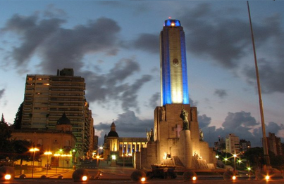
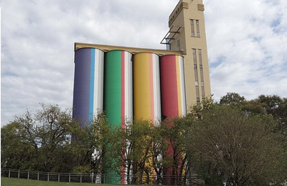
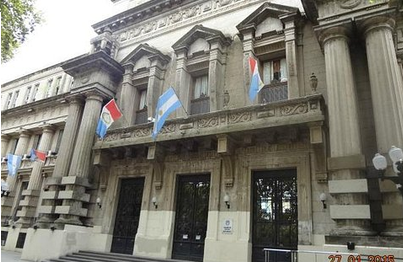
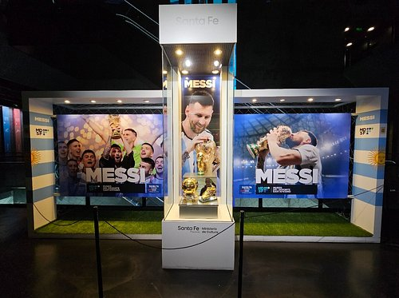
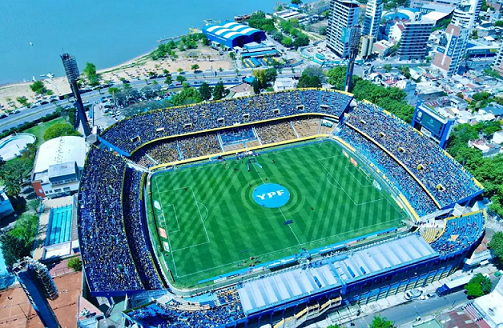
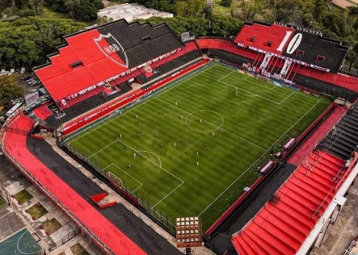

Lugares con historia

Monumento
Emblema arquitectonico el cual se ignauguro el 20 de junio de 1957

Silos David
Ejemplo de innovación, historia, reutilización, de estructuras imponentes, ícono industrial, de arquitectura única

Museo ángel Gallardo
Museo de historia natural de Rosario, especializado en biología

Museo del deporte
Espacio público de dediccado a preservar el legado del deporte y sus máximas glorias

Cancha de Rosario Central
Más conocida como el Gigante de arroyito, ignaugurado en 1929

Cancha de Newell´s old Boys
Conocido como el estadio Marcelo Bilesa, ignaugurado en 1911